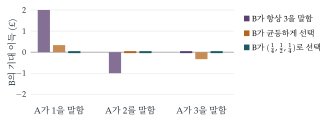

STEP I 1989, 문제 16
계속 읽기 전에 문제를 먼저 읽어 보자. 문제는 STEP Support Programme의 문제 데이터베이스에 있다: step.maths.org/questions/89-s1-q16
도입
가위바위보에서는 어떤 고정된 선택이든 상대에게 공략당할 수 있다. 매번 바위만 내면 상대는 곧 보를 내는 법을 익힌다. 유일하게 안전한 전략은 무작위화(randomisation)하는 것이다. 이 문제는 그보다 더 정교한 형태로, 보상이 서로 같지 않고 올바른 무작위화 방법도 분명하지 않다. 그런데 \(1\), \(2\), \(3\)을 각각 확률 \(\frac14\), \(\frac12\), \(\frac14\)로 고르면, 상대가 무엇을 하든 장기적으로 지지 않음을 보장할 수 있다는 사실이 밝혀진다.
이것은 게임 이론(game theory)의 출발점이 된 결과인, 1928년 존 폰 노이만(John von Neumann)의 최소최대 정리(minimax theorem)를 처음 엿보는 것이다. 이 정리에 따르면, 한 사람의 이득이 곧 다른 사람의 손실인 모든 2인 게임에서, 완벽하게 플레이하는 상대에 맞서 가능한 최선의 결과를 보장하는 무작위 전략이 각 플레이어에게 존재한다.
시작하기 전에
두 사람이 말하는 수의 각 쌍에 대하여 B의 상금을 나타내는 표를 만들어 보라(B의 수는 세로로, A의 수는 가로로 놓는다).
규칙을 차례로 적용하면(예를 들어 B가 \(1\)을, A가 \(3\)을 말하면 두 수의 차가 \(2\)이므로 더 작은 수를 말한 B가 £2를 낸다) 다음 표를 얻는다.
| B \(\backslash\) A | \(1\) | \(2\) | \(3\) |
|---|---|---|---|
| \(1\) | \(0\) | \(+1\) | \(-2\) |
| \(2\) | \(-1\) | \(0\) | \(+1\) |
| \(3\) | \(+2\) | \(-1\) | \(0\) |
이 표는 반대칭(antisymmetric)이다(두 플레이어를 바꾸면 부호가 바뀐다). 따라서 어느 플레이어도 처음부터 유리하지 않다는 의미에서 이 게임은 공정하다.
차근차근 풀기
단계 1 고정된 선택에 맞서기
A가 항상 \(1\)을 말하면, B는 \(3\)을 말하여 매 판 £2를 따야 한다. A가 항상 \(2\)를 말하면, B는 \(1\)을 말하여 £1을 딴다. A가 항상 \(3\)을 말하면, B는 \(2\)를 말하여 £1을 딴다. 어떤 고정된 선택이든 공략당할 수 있다.
단계 2 균등한 무작위 선택에 맞서기
A가 균등하게 무작위로 수를 고른다면, B가 \(j\)를 말할 때 B의 기대 이득(expected gain)은 얼마인가? (표의 \(j\)번째 행의 평균을 구하라.)
행의 평균은 \(j = 1\)일 때 \(\frac13(0 + 1 - 2) = -\frac13\), \(j = 2\)일 때 \(0\), \(j = 3\)일 때 \(\frac13(2 - 1 + 0) = \frac13\)이다. 따라서 한 판당 B의 기대 상금은 \[-\tfrac13b_1 + 0\cdot b_2 + \tfrac13b_3,\] 이고, 이것은 \(b_3 = 1\)일 때 최대가 된다. 즉 항상 \(3\)을 말하면 한 판에 평균 \(\frac13\)파운드를 딴다. 균등한 무작위화는 A를 지켜 주지 못한다.
단계 3 일반적인 경우
이제 A가 확률 \(a_j\)로 \(j\)를 말한다고 하자. B의 기대 상금을 A가 말하는 수에 따라 묶어 보라. \(a_1\)의 계수(가중치 \(b_j\)를 둔 \(1\)열의 평균)는 무엇인가?
표의 열을 위에서 아래로 읽으면 \[\text{B의 기대 상금} = (-b_2 + 2b_3)a_1 + (b_1 - b_3)a_2 + (-2b_1 + b_2)a_3,\] 이므로 \(X = -b_2 + 2b_3\), \(Y = b_1 - b_3\), \(Z = -2b_1 + b_2\)이다.
세 값을 모두 \(0\)으로 만들 수 있는가? (방정식은 세 개지만 서로 독립이 아니다. 왜 그런가?)
이 방정식들은 독립이 아니다. 항등적으로 \(X + 2Y + Z = 0\)이기 때문이다(확인해 보라). 따라서 \(Y = 0\)에서 \(b_1 = b_3\)을, \(X = 0\)에서 \(b_2 = 2b_3\)을 얻으면 \(Z = 0\)도 저절로 성립한다. \(b_1 + b_2 + b_3 = 1\)과 함께 풀면 \[b_1 = \tfrac14, \qquad b_2 = \tfrac12, \qquad b_3 = \tfrac14,\] 이고, 이때 \(X = Y = Z = 0\)이다. 그러면 \(a_j\)가 무엇이든 B의 기대 상금은 \(0\)이고, B는 장기적으로 아무것도 잃지 않는다.■

돌아보기
보수표(payoff table)를 만들라. 모든 추론은 \(3 \times 3\) 행렬의 행과 열에 관한 것이었다.
순수 전략(pure strategy)은 공략당할 수 있다. 어떤 고정된 선택에 대해서도, 심지어 균등한 무작위 선택에 대해서도 상대에게는 이익이 되는 대응이 있다.
균등하게 맞추라. 안전한 전략은 상대가 어느 쪽을 골라도 차이가 없게 만든다. 즉 A의 모든 선택이 같은 기대 결과를 준다.
숨은 수학
최소최대 정리
보수 행렬 \(M\)으로 주어지는 2인 영합(zero-sum) 게임에서 B가 확률 \(\mathbf{b}\)를, A가 확률 \(\mathbf{a}\)를 고르면 B의 기대 상금은 \(\mathbf{b}^{\mathsf T}M\mathbf{a}\)이다. 폰 노이만의 최소최대 정리는 \[\max_{\mathbf b}\min_{\mathbf a}\mathbf{b}^{\mathsf T}M\mathbf{a} = \min_{\mathbf a}\max_{\mathbf b}\mathbf{b}^{\mathsf T}M\mathbf{a}.\] 임을 말한다. 말로 하면, B가 무작위 전략을 미리 공표하여 보장할 수 있는 금액은, A가 자신의 전략을 공표하여 B를 묶어 둘 수 있는 금액과 같다. 이 공통의 값을 게임의 값(value)이라 한다. 여기서는 반대칭성 때문에 값이 \(0\)이고, 전략 \((\frac14, \frac12, \frac14)\)는 두 플레이어 모두에게 최적이다. 이 정리는 선형대수와 볼록성(convexity)을 이용하여 증명하며(선형 계획법(linear programming)의 쌍대 정리(duality theorem)와 동치이다), 이를 여러 플레이어로 일반화한 내시 균형(Nash equilibrium)으로 존 내시(John Nash)는 노벨 경제학상을 받았다.
왜 무작위화하는가?
여기서 무작위성은 운의 문제가 아니라 정보의 문제이다. B의 선택을 예측할 수 있다면 A는 그것을 공략할 수 있다. B는 올바른 확률로 무작위화함으로써 자신의 선택을 예측할 수 없게 만들 뿐 아니라 어떤 예측도 도움이 되지 않도록 한다. 실제 예로는 축구의 페널티킥이 있다. 프로 선수들을 연구한 결과, 키커와 골키퍼가 게임 이론의 최적값에 가까운 비율로 왼쪽과 오른쪽을 무작위로 선택한다는 사실이 밝혀졌다. 테니스의 서브도 또 다른 예이다.
존 폰 노이만은 1928년 논문 “On the theory of games of strategy”(전략 게임 이론에 관하여)에서 최소최대 정리를 증명하였다. 이 연구의 동기는 포커였는데, 포커에서 블러핑은 무작위화의 한 형태이다. 1944년에 그는 경제학자 오스카어 모르겐슈테른(Oskar Morgenstern)과 함께 Theory of Games and Economic Behavior(게임 이론과 경제 행동)를 펴내어 게임 이론을 하나의 학문 분야로 세웠다. 폰 노이만은 훗날, 최소최대 정리를 핵심 결과로 여겼으며 이 정리가 없었다면 출판할 가치가 있는 게임 이론은 없었을 것이라고 회고하였다.
사고 기술
어떤 고정된 선택이든 공략당할 수 있을 때에는, 상대가 자신의 선택지들 사이에서 차이를 느끼지 못하게 만드는 확률로 무작위로 선택하라.
대학에서는 게임 이론, 선형 계획법, 알고리즘 이론이 모두 이 아이디어를 사용한다. 예를 들어 무작위 알고리즘(randomised algorithm)은 어떤 적대자도 예측할 수 없는 무작위 선택을 함으로써 최악의 입력으로부터 스스로를 보호한다.
더 도전하기
A의 최선의 대응. B가 \((\frac14, \frac12, \frac14)\)를 사용하면 A의 모든 전략에 대해 기대 상금이 \(0\)임을 보여라. B가 대신 \((\frac13, \frac13, \frac13)\)을 사용하면 A의 최선의 대응을 구하라.
가위바위보. 가위바위보의 보수 행렬을 쓰고 최적 전략을 구하라. 여기서는 왜 균등 전략이 최적이고, 이 문제에서는 그렇지 않은가?
유일성. 지지 않음을 보장하는 B의 전략은 \((\frac14, \frac12, \frac14)\) 하나뿐임을 보여라. (힌트: 그 전략은 \(X\), \(Y\), \(Z\)를 모두 음이 아니게 만들어야 한다. \(X + 2Y + Z = 0\)을 이용하라.)
변형된 게임. 차가 \(2\)일 때의 벌금이 £2가 아니라 £3이라면 최적 전략을 구하라.
더 읽을거리
Ken Binmore, Playing for Real (Oxford University Press). 철저하면서도 친절한 게임 이론 입문서.
Avinash Dixit & Barry Nalebuff, The Art of Strategy (Norton). 스포츠와 비즈니스의 예를 곁들인 게임 이론.
William Poundstone, Prisoner’s Dilemma (Anchor). 폰 노이만, 게임 이론, 그리고 냉전.